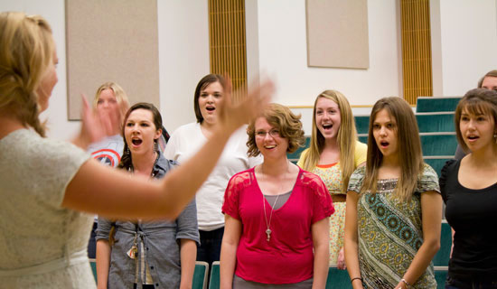

VOICE

The Voice Area prepares students for careers in vocal performance, whether on the concert stage or in teaching. Students engage in a variety of academic and performance experiences that encompass opera, oratorio and art song, as well as concert literature, providing hands-on opportunities to learn vocal technique and stagecraft.
Students receive outstanding vocal training and coaching from a distinguished faculty of active performers who balance careers with teaching. Our comprehensive curriculum guides singers to be versatile, creative and technically proficient on- and off-stage.
Regular performance opportunities include one annual full production with orchestra in Kingsbury Hall, as well as opera scenes presented in Libby Gardner Concert Hall.
Past opera productions have included Floyd’s Susannah, Monteverdi’s L’incoronazione di Poppea, Poulenc’s Dialogues of the Carmelites, Adamo’s Little Women, and Puccini’s Suor Angelica and Gianni Schicchi.
Visiting directors and artists enhance on campus vocal opportunities; alumns Stanford Olsen and Celena Shafer give master classes, along with other vocal greats such as Barbara Bonney and Michael Barrett.
The proximity of the professional Utah Opera company offers additional learning, as well as performance, opportunities for our students.
Participation in our choral ensembles allows students to learn a variety of music styles and master works as choristers and soloists.